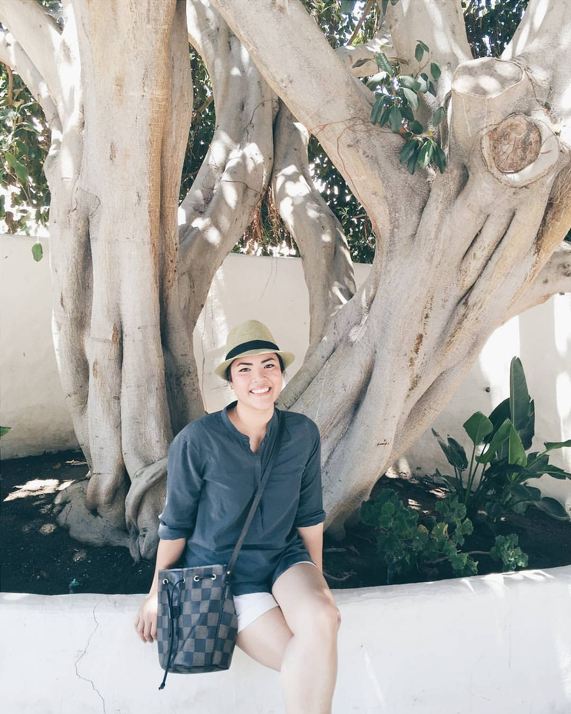

About me
My name is Tracy Le and I live in San Diego, California. I am currently a student at UCSD Extension learning to become a Full-Stack Web Developer.
I graduate in May 2019 and I am excited to embark this new coding journey! I received my Bachelor's degree
from Arizona State University in 2018 with a focus in Art History and a minor in Business. I am passionate in museum studies and organizations, but I also
enjoy learning coding languages and creating amazing things with it. In my free time, I love visiting different art museums and supporting local coffee shops.
It's a pleasure to meet you!